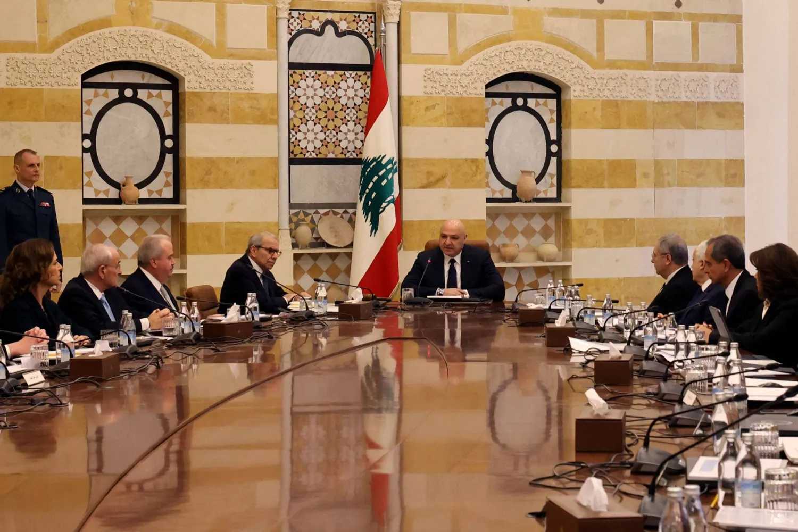

الأخبار | سياسة
أحدث الأخبار السياسيةالحكومة اللبنانية تعلن خطة إنقاذ اقتصاديأعلنت الحكومة اللبنانية اليوم عن خطة شاملة للإنقاذ الاقتصادي، تهدف إلى معالجة الأزمة المالية التي تمر بها البلاد. وتتضمن الخطة سلسلة من الإجراءات الإصلاحية في القطاعات المختلفة. وقال رئيس الحكومة في مؤتمر صحفي إن "هذه الخطة ستساهم في استعادة ثقة المستثمرين والمجتمع الدولي في الاقتصاد اللبناني، وستمهد الطريق لتحقيق الاستقرار المالي والنقدي في البلاد".
تظاهرات في بيروت تطالب بالإصلاحات
شهدت العاصمة اللبنانية بيروت تظاهرات حاشدة للمطالبة بالإصلاحات السياسية والاقتصادية. وتجمع المتظاهرون في ساحة الشهداء وسط بيروت، رافعين شعارات تطالب بمحاربة الفساد وتحسين الأوضاع المعيشية. وأكد المشاركون في التظاهرة على ضرورة تنفيذ الإصلاحات الحقيقية التي تلبي طموحات المواطنين، وتساهم في إخراج البلاد من أزمتها الاقتصادية الخانقة. |
أخبار عاجلة
استطلاع رأيمواضيع سياسية شائعة
|